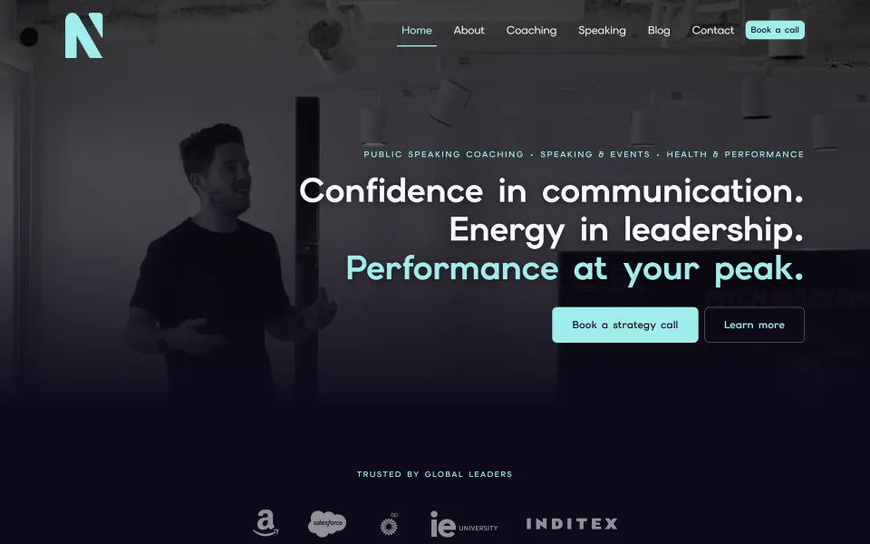
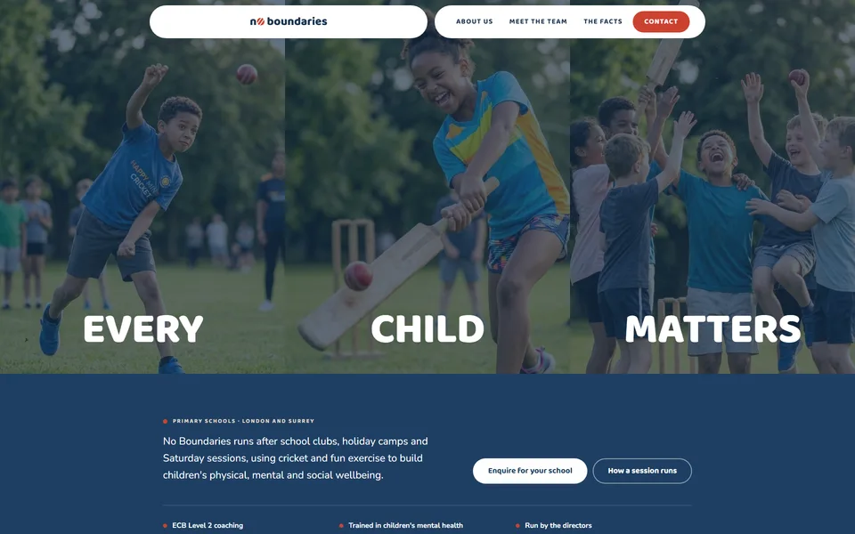
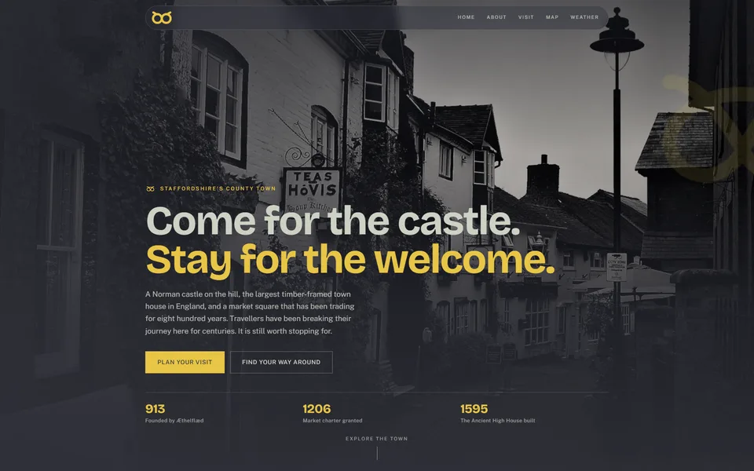
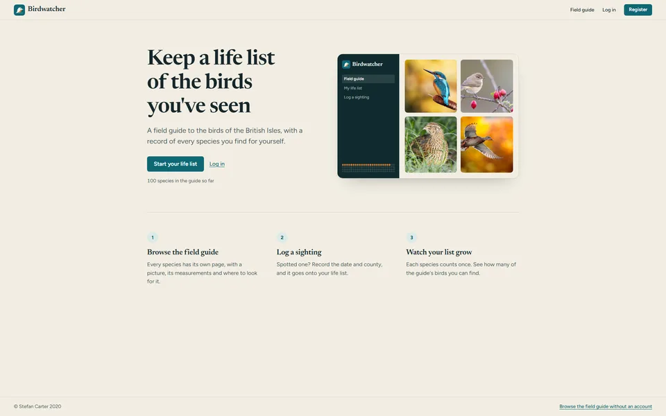
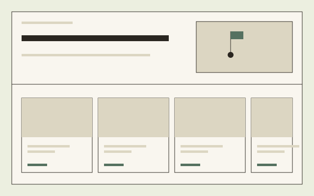

01

Nick Hampshire
A personal brand site for a speaking coach.
Projects
Four client sites and one side project, from a speaking coach to a golf club.
05
Browse
01

A personal brand site for a speaking coach.
02

School wellbeing, through cricket.
03

A front door for the town of Stafford.
04

A field guide and life list for birders.
05

A club website with an online pro shop.
Get in touch